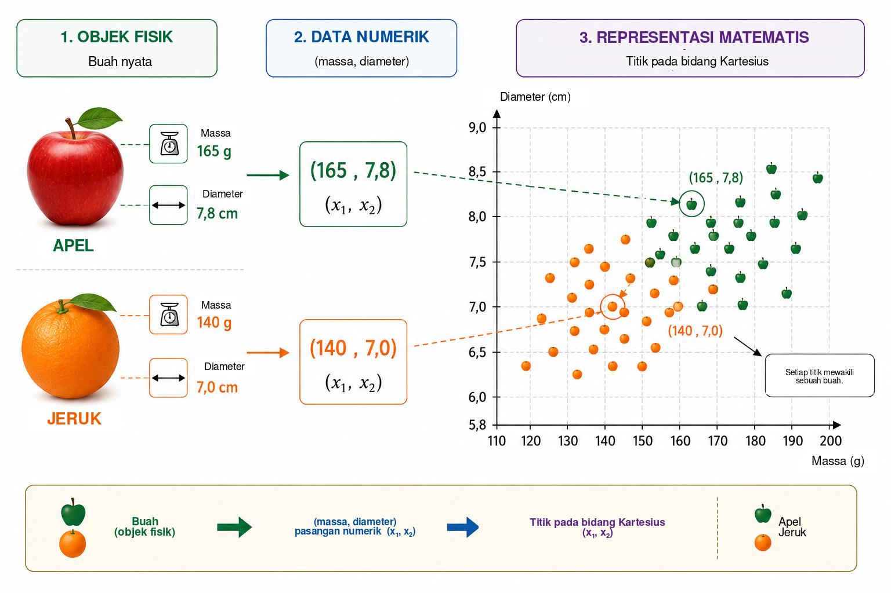
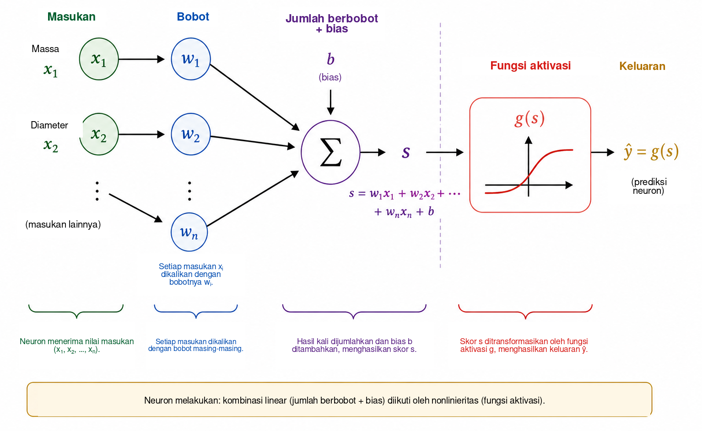
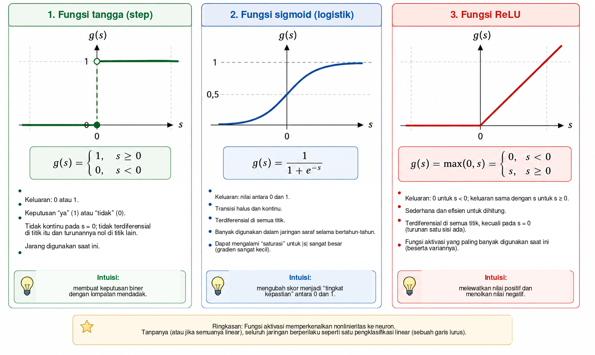
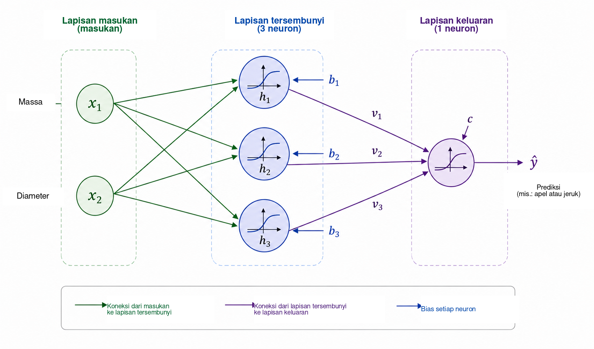
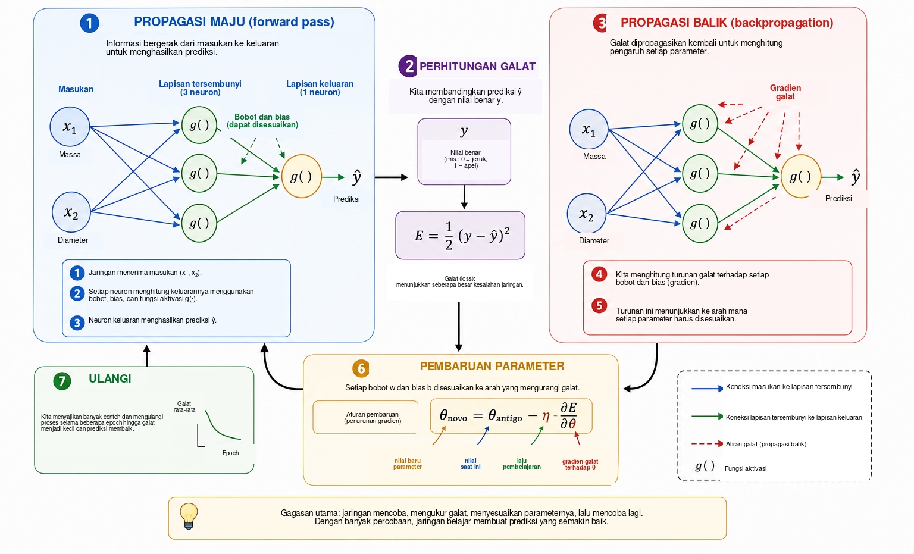
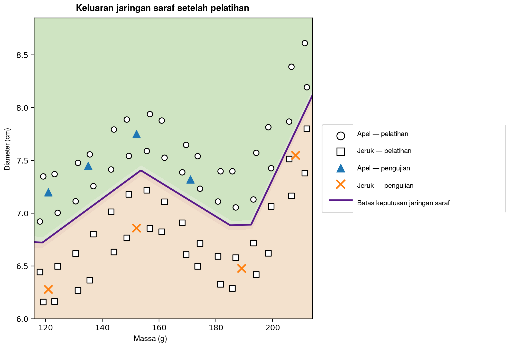

Kapan komputer dapat belajar?
Dalam kehidupan sehari-hari, kita membuat keputusan klasifikasi hampir tanpa menyadarinya. Dengan melihat sebuah buah, kita dengan cepat mengenalinya sebagai apel atau jeruk; ketika sebuah pesan masuk ke telepon, kita membedakan percakapan yang sah dari iklan yang tidak diinginkan; dalam analisis medis, beberapa pengukuran dapat digabungkan untuk mendukung suatu keputusan; dan di lembaga keuangan, berbagai informasi dievaluasi sebelum kredit diberikan. Dalam semua contoh ini, beberapa karakteristik dipertimbangkan secara bersama-sama untuk menghasilkan suatu jawaban.
Dalam banyak program komputer tradisional, aturan yang menghasilkan jawaban tersebut ditulis secara eksplisit oleh pemrogram. Pendekatan ini bekerja dengan baik ketika aturannya diketahui dan dapat dinyatakan secara jelas. Pendekatan ini menjadi kurang efektif ketika data sangat bervariasi atau ketika sulit merumuskan terlebih dahulu setiap kondisi yang diperlukan untuk menghasilkan keputusan yang baik. Dari sini muncul pertanyaan yang alami:
Dapatkah kita membangun sebuah program yang mempelajari aturan keputusan dari contoh, alih-alih menerima aturan tersebut terlebih dahulu?
Inilah salah satu gagasan utama pembelajaran mesin, yaitu bidang kecerdasan buatan yang mempelajari metode untuk menyesuaikan model berdasarkan data . Dalam masalah pembelajaran terawasi, algoritme menerima contoh beserta jawaban yang benar, dan kita mencari model yang juga mampu membuat prediksi yang berguna untuk kasus-kasus yang tidak digunakan selama pelatihan. Di antara banyak model yang dikembangkan untuk tujuan ini, jaringan saraf tiruan menjadi penting dalam aplikasi seperti pengenalan citra, pemrosesan bahasa, analisis sinyal, dan prediksi deret waktu .
Penggunaan jaringan saraf sebagai jembatan antara matematika, komputasi, dan pendidikan sekolah telah dibahas dalam Professor de Matemática Online oleh Batista dan Martins , yang menyajikan kegiatan yang melibatkan pendidikan guru, Python, dan pengenalan angka. Artikel ini mengambil jalur yang saling melengkapi. Tujuan utama kami adalah memperlihatkan matematika internal dari sebuah jaringan saraf kecil, dimulai dari geometri analitik dan berlanjut langkah demi langkah hingga perhitungan gradien dan implementasi manual propagasi balik.
Meskipun aplikasi modern tampak sangat canggih, inti matematis jaringan saraf dapat diperkenalkan melalui gagasan yang relatif familiar. Pada tingkat dasar, jaringan saraf adalah komposisi fungsi yang parameternya disesuaikan dari data. Kita mulai dengan sebuah masalah geometri sederhana, menafsirkan kembali garis pemisah sebagai neuron tiruan, menghubungkan beberapa neuron, mempelajari peran fungsi aktivasi, dan menunjukkan bagaimana turunan dapat digunakan untuk menyesuaikan parameter jaringan secara otomatis. Setelah itu kita mengimplementasikan sebuah contoh kecil yang lengkap dalam Python dengan mempertahankan hubungan langsung antara persamaan dan kode.
Merepresentasikan masalah secara matematis
Untuk memahami bagaimana jaringan saraf bekerja, kita mulai dengan masalah yang sengaja dibuat sederhana: membedakan apel dari jeruk. Sebuah buah memiliki banyak karakteristik yang dapat berguna untuk tugas ini, seperti warna, massa, diameter, tekstur, dan aroma. Namun, model matematis awal tidak perlu memuat seluruh kompleksitas tersebut. Kita hanya akan menggunakan dua besaran yang mudah diukur: massa, dalam gram, dan diameter, dalam sentimeter.
Setiap buah akan direpresentasikan oleh pasangan terurut \[(x_1,x_2),\] dengan \[x_1=\text{massa} \qquad\text{dan}\qquad x_2=\text{diameter}.\]
Dengan demikian, pasangan \((155,\;7.2)\) merepresentasikan buah bermassa \(155\) g dan berdiameter \(7.2\) cm. Dengan mengganti objek fisik oleh dua pengukuran numerik, kita mengaitkan setiap buah dengan sebuah titik pada bidang Kartesius: koordinat pertama menyatakan massanya dan koordinat kedua diameternya. Gambar 1 memperlihatkan representasi ini untuk suatu himpunan hipotetis apel dan jeruk.

Transformasi ini mengubah cara kita melihat masalah. Alih-alih bertanya langsung bagaimana mengenali apel atau jeruk, kita dapat mengajukan pertanyaan geometri: bagaimana titik-titik yang termasuk ke dalam dua kelas dapat dipisahkan pada bidang? Perubahan sudut pandang ini sangat mendasar dalam pembelajaran mesin. Citra, teks, suara, dan sinyal eksperimen semuanya harus diubah menjadi representasi numerik sebelum dapat diproses oleh algoritme. Dalam contoh kita, setiap objek hanya memiliki dua koordinat; dalam aplikasi nyata, sebuah representasi dapat memuat ratusan, ribuan, bahkan jutaan komponen. Prinsipnya tetap sama: setiap contoh dikaitkan dengan sekumpulan angka, dan model mencari aturan yang memetakan representasi tersebut ke jawaban yang diinginkan.
Kita mulai dengan aturan geometri paling sederhana dan bertanya apakah sebuah garis lurus tunggal dapat memisahkan titik-titik apel dari titik-titik jeruk dengan cukup baik.
Garis lurus sebagai pengklasifikasi
Setelah setiap buah direpresentasikan sebagai titik pada bidang Kartesius, klasifikasi menjadi masalah geometri: dapatkah sebuah garis lurus memisahkan apel dari jeruk? Pertanyaan ini menangkap gagasan dasar dari keluarga penting metode pembelajaran mesin yang dikenal sebagai pengklasifikasi linear.
Perhatikan sebuah garis yang melintasi kumpulan data seperti pada Gambar 2. Garis tersebut membagi bidang menjadi dua setengah bidang. Jika sebagian besar titik apel berada di satu sisi dan sebagian besar titik jeruk berada di sisi lain, posisi buah baru terhadap garis dapat digunakan sebagai aturan klasifikasi. Setelah massa dan diameternya diukur, kita merepresentasikan buah itu sebagai sebuah titik dan menentukan pada sisi garis mana titik tersebut berada.

Pada bidang Kartesius \((x_1,x_2)\), sebuah garis dapat dideskripsikan oleh \[w_1x_1+w_2x_2+b=0, \qquad (w_1,w_2)\neq(0,0).\]
Vektor \((w_1,w_2)\) tegak lurus terhadap garis dan karena itu menentukan orientasinya, sedangkan parameter \(b\) turut menentukan posisinya. Representasi ini memiliki sedikit redundansi: mengalikan \(w_1\), \(w_2\), dan \(b\) dengan konstanta tak nol yang sama menghasilkan garis yang persis sama. Jadi, parameter yang mendeskripsikan batas tersebut tidak unik. Interpretasi numeriknya juga bergantung pada skala variabel. Karena massa diukur dalam gram dan diameter dalam sentimeter, besar numerik \(w_1\) dan \(w_2\) tidak boleh dibandingkan tanpa memperhitungkan perbedaan satuan.
Persamaan garis itu sendiri memberikan cara sederhana untuk menentukan pada sisi batas mana suatu titik berada. Definisikan skor \[s(x_1,x_2)=w_1x_1+w_2x_2+b.\]
Jika \(s(x_1,x_2)=0\), titik berada tepat pada garis. Jika \(s(x_1,x_2)>0\), titik berada pada satu setengah bidang; jika \(s(x_1,x_2)<0\), titik berada pada setengah bidang yang lain. Jika kita menetapkan bahwa skor positif bersesuaian dengan apel dan skor negatif dengan jeruk, aturannya menjadi \[\begin{cases} s(x_1,x_2)\geq 0 & \Longrightarrow \text{apel},\\ s(x_1,x_2)<0 & \Longrightarrow \text{jeruk}. \end{cases}\]
Sebagai contoh, perhatikan batas yang ditentukan oleh \[w_1=\frac{1}{10}, \qquad w_2=2, \qquad b=-30.\] Untuk buah bermassa \(160\) g dan berdiameter \(7.8\) cm, \[\begin{aligned} s &=\frac{1}{10}\times160+2\times7.8-30\\ &=16+15.6-30\\ &=1.6. \end{aligned}\] Karena skornya positif, titik berada pada setengah bidang yang kita kaitkan dengan apel. Pengklasifikasi ini karena itu akan memberi label buah tersebut sebagai apel.
Tidak setiap pilihan \(w_1\), \(w_2\), dan \(b\) menghasilkan klasifikasi yang baik. Beberapa garis memisahkan kedua kelompok dengan buruk, sedangkan yang lain menghasilkan lebih sedikit kesalahan. Masalah pembelajaran tepatnya adalah menggunakan contoh yang telah diberi label untuk menentukan nilai parameter yang mengurangi suatu ukuran galat model. Alih-alih memprogram posisi garis secara langsung, kita ingin algoritme menyesuaikan koefisiennya berdasarkan data.
Sebuah garis tunggal dapat bekerja dengan baik ketika kelas-kelas kurang lebih dapat dipisahkan secara linear. Himpunan data yang lebih rumit mungkin memerlukan batas nonlinear. Sebelum membahas keterbatasan tersebut, kita menafsirkan kembali pengklasifikasi yang baru dibangun sebagai unit komputasi elementer: sebuah neuron tiruan.
Neuron tiruan
Pada bagian sebelumnya, ekspresi \[s=w_1x_1+w_2x_2+b\] digunakan untuk menentukan pada sisi garis mana sebuah buah berada. Ekspresi yang sama dapat dipandang sebagai tahap pertama dari komputasi yang dilakukan oleh sebuah neuron tiruan. Sebuah neuron menerima masukan numerik, menggabungkannya menggunakan bobot dan bias, kemudian menerapkan suatu fungsi matematis untuk memperoleh keluarannya.
Dalam contoh kita, masukannya adalah massa \(x_1\) dan diameter \(x_2\). Setiap masukan dikalikan dengan sebuah parameter yang disebut bobot; hasil-hasil kali dijumlahkan bersama suku konstan \(b\), yang disebut bias. Gambar 3 menunjukkan komputasi ini secara skematis.

Bobot menentukan bagaimana perubahan pada masukan memengaruhi skor. Jika \(x_2\) dan semua besaran lain dipertahankan tetap, perubahan \(\Delta x_1\) mengubah \(s\) sebesar \(w_1\Delta x_1\). Demikian pula, perubahan \(\Delta x_2\) mengubah skor sebesar \(w_2\Delta x_2\). Tanda bobot juga penting: bobot positif membuat peningkatan masukan meningkatkan skor, sedangkan bobot negatif menghasilkan efek sebaliknya. Interpretasi ini harus digunakan dengan hati-hati ketika variabel memiliki satuan dan skala yang berbeda. Karena alasan ini, implementasi praktis sering melakukan normalisasi atau standardisasi data masukan sebelum pelatihan.
Bias \(b\) adalah suku konstan dalam transformasi afin. Secara geometris, bias memungkinkan batas keputusan bergeser. Jika \(b=0\), persamaan \[w_1x_1+w_2x_2=0\] memaksa garis melalui titik asal. Dengan adanya bias, batas dapat berpindah ke lokasi lain. Secara ekuivalen, ketika \(x_1=x_2=0\), skornya hanyalah \(s=b\).
Skor tidak harus menjadi keluaran akhir neuron. Secara umum, sebuah fungsi aktivasi \(g\) diterapkan pada skor: \[\widehat{y}=g(s)=g\left(w_1x_1+w_2x_2+b\right).\] Dengan demikian, komputasi memiliki dua tahap, \[\begin{aligned} s &= w_1x_1+w_2x_2+b,\\[4pt] \widehat{y} &= g(s). \end{aligned}\]
Dengan nilai parameter dari bagian sebelumnya diperoleh \(s=1.6\). Jika kita memilih fungsi tangga \[g(s)= \begin{cases} 1, & s\geq0,\\ 0, & s<0, \end{cases}\] maka \(\widehat{y}=g(1.6)=1\). Berdasarkan konvensi kita, buah tersebut diklasifikasikan sebagai apel. Dengan aktivasi ini, keputusan berubah ketika \(s\) melintasi nol, sehingga batas kelas tepat diberikan oleh \[w_1x_1+w_2x_2+b=0.\]
Sebuah neuron tunggal karena itu merupakan objek matematis sederhana dengan parameter yang dapat disesuaikan. Kepentingan sebenarnya muncul ketika banyak unit semacam ini dihubungkan. Namun sebelum membangun jaringan, kita perlu memahami mengapa fungsi aktivasi sangat penting.
Mengapa kita memerlukan fungsi aktivasi?
Sebuah neuron mula-mula menghitung skor melalui transformasi afin, lalu menerapkan fungsi aktivasi. Tahap kedua ini sangat penting agar jaringan saraf dapat merepresentasikan hubungan yang rumit. Untuk melihat alasannya, bayangkan jaringan tanpa fungsi aktivasi. Setiap unit akan berbentuk \[y=w_1x_1+w_2x_2+b.\]
Untuk ilustrasi satu dimensi, misalkan unit pertama menghasilkan \[h=ax+b\] dan unit kedua menghitung \[y=ch+d.\] Dengan substitusi diperoleh \[y=c(ax+b)+d=acx+(cb+d),\] yang tetap merupakan fungsi afin dari \(x\). Pernyataan yang sama berlaku dalam beberapa dimensi: komposisi transformasi afin tetap merupakan transformasi afin. Karena itu, menambahkan banyak lapisan tanpa operasi nonlinear tidak membuat jaringan secara mendasar lebih ekspresif; seluruh komposisi dapat diganti oleh satu transformasi afin saja.
Fungsi aktivasi mematahkan keterbatasan ini. Setelah menghitung skor \(s\), neuron menerapkan pemetaan yang biasanya nonlinear \[h=g(s).\] Ketika beberapa unit semacam ini dihubungkan, komposisi yang dihasilkan tidak lagi dapat direduksi menjadi satu transformasi afin. Hal ini memungkinkan jaringan membangun batas keputusan yang lebih rumit.
Aktivasi yang paling sederhana adalah fungsi tangga, \[g(s)= \begin{cases} 1, & s\geq0,\\ 0, & s<0. \end{cases}\] Fungsi ini menghasilkan keputusan biner dan sangat berguna untuk memahami klasifikasi. Namun turunannya bernilai nol untuk \(s\neq0\) dan tidak terdefinisi pada \(s=0\). Karena pelatihan berbasis gradien menggunakan turunan untuk menentukan bagaimana parameter harus berubah, fungsi tangga tidak sesuai untuk mekanisme pelatihan tersebut.
Salah satu alternatif adalah fungsi sigmoid, \[\sigma(s)=\frac{1}{1+e^{-s}}.\] Fungsi ini memetakan setiap bilangan real ke nilai yang secara ketat berada di antara \(0\) dan \(1\). Untuk \(s\) yang sangat negatif, keluarannya mendekati \(0\); untuk \(s\) yang sangat positif, keluarannya mendekati \(1\); di antara kedua keadaan ini, transisinya halus. Sigmoid terdiferensial di setiap titik, dengan \[\sigma'(s)=\sigma(s)\bigl(1-\sigma(s)\bigr).\] Karena keluarannya berada di antara \(0\) dan \(1\), sigmoid sering digunakan pada lapisan keluaran pengklasifikasi biner. Dalam formulasi probabilistik dengan fungsi galat yang sesuai, keluaran dapat ditafsirkan sebagai estimasi probabilitas kelas yang direpresentasikan oleh \(1\). Namun pada lapisan tersembunyi, sigmoid dapat menimbulkan kesulitan: untuk masukan dengan magnitudo besar, turunannya menjadi sangat kecil, sehingga berkontribusi pada masalah gradien menghilang dalam jaringan yang dalam.
Aktivasi lapisan tersembunyi yang banyak digunakan adalah ReLU (Rectified Linear Unit), \[\operatorname{ReLU}(s)=\max(0,s) = \begin{cases} 0, & s<0,\\ s, & s\geq0. \end{cases}\] Walaupun tersusun dari dua bagian linear, ReLU tidak linear secara global. Turunannya bernilai \(0\) untuk \(s<0\) dan \(1\) untuk \(s>0\). Pada \(s=0\), turunan biasa tidak ada dan implementasi perangkat lunak menggunakan suatu konvensi untuk gradien. Untuk masukan positif, turunan tidak mengecil ketika \(s\) bertambah, sehingga menghindari salah satu mekanisme saturasi sigmoid.
Gambar 4 membandingkan ketiga aktivasi ini secara visual: lompatan tiba-tiba fungsi tangga, transisi sigmoid yang halus, dan perubahan kemiringan pada ReLU.

Sifat-sifat utamanya dirangkum di bawah ini.
| Fungsi | Keluaran | Turunan | Penggunaan umum |
|---|---|---|---|
| Tangga | \(\{0,1\}\) | Nol untuk \(s\neq0\); tidak terdefinisi pada \(s=0\) | Model historis dan contoh didaktis |
| Sigmoid | \((0,1)\) | Ada untuk setiap \(s\) | Lapisan keluaran dalam klasifikasi biner |
| ReLU | \([0,\infty)\) | \(0\) untuk \(s<0\) dan \(1\) untuk \(s>0\) | Lapisan tersembunyi |
Rincian ketiga fungsi tersebut berbeda, tetapi peran konseptual yang sama adalah memperkenalkan nonlinieritas. Nonlinieritas inilah yang memungkinkan jaringan kecil pada bagian berikutnya merepresentasikan hubungan yang tidak dapat ditangkap oleh satu garis lurus.
Bagi pembaca yang ingin melangkah lebih jauh, Haykin memberikan pembahasan klasik mengenai jaringan saraf, sedangkan Goodfellow, Bengio, dan Courville membahas fungsi aktivasi dan pelatihan jaringan dalam pada konteks yang lebih luas. Teks Nielsen yang tersedia bebas sangat mudah diakses untuk mengembangkan intuisi mengenai neuron, aktivasi, dan pembelajaran.
Membangun jaringan saraf kecil
Sekarang kita mempertimbangkan sebuah jaringan dengan dua masukan, satu lapisan tersembunyi yang berisi tiga neuron, dan satu neuron keluaran. Masukannya tetap \[x_1=\text{massa}, \qquad x_2=\text{diameter},\] dan keduanya diberikan kepada setiap neuron tersembunyi, seperti ditunjukkan pada Gambar 5.

Misalkan keluaran lapisan tersembunyi adalah \(h_1\), \(h_2\), dan \(h_3\). Setiap neuron menerima dua masukan yang sama, tetapi memiliki bobot dan biasnya sendiri: \[\begin{aligned} h_1&=g\left(w_{11}x_1+w_{12}x_2+b_1\right),\\[4pt] h_2&=g\left(w_{21}x_1+w_{22}x_2+b_2\right),\\[4pt] h_3&=g\left(w_{31}x_1+w_{32}x_2+b_3\right). \end{aligned}\]
Walaupun ketiga neuron menerima massa dan diameter yang sama, mereka dapat menghasilkan respons yang berbeda karena parameternya berbeda. Selama pelatihan, parameter-parameter tersebut disesuaikan agar aktivasi antara menjadi berguna untuk klasifikasi.
Ketiga besaran \(h_1\), \(h_2\), dan \(h_3\) kemudian diteruskan ke neuron keluaran, yang menghitung \[s_{\mathrm{out}}=v_1h_1+v_2h_2+v_3h_3+c\] dan menghasilkan \[\widehat{y}=g_{\mathrm{out}}\left(s_{\mathrm{out}}\right).\] Untuk masalah biner kita, digunakan keluaran sigmoid: \[\widehat{y}=\sigma\left(v_1h_1+v_2h_2+v_3h_3+c\right), \qquad 0<\widehat{y}<1.\]
Dengan menggunakan \(y=1\) untuk apel dan \(y=0\) untuk jeruk, ambang \(0.5\) memberikan keputusan kelas \[\widehat{y}\geq0.5 \Longrightarrow \text{apel}, \qquad \widehat{y}<0.5 \Longrightarrow \text{jeruk}.\] Nilai yang dekat dengan \(1\) karena itu sangat berkaitan dengan apel, sedangkan nilai yang dekat dengan \(0\) berkaitan dengan jeruk. Seperti telah disebutkan, menafsirkan \(\widehat{y}\) secara numerik sebagai probabilitas memerlukan asumsi tambahan mengenai model dan proses pelatihannya. Untuk aturan klasifikasi yang digunakan di sini, cukup memandang \(\widehat{y}\) sebagai keluaran kontinu dari jaringan.
Ciri utama arsitektur ini adalah representasi antara \[(x_1,x_2) \longrightarrow (h_1,h_2,h_3) \longrightarrow \widehat{y}.\] Jaringan menerima dua fitur dan membangun tiga besaran baru sebelum menghasilkan jawaban akhir. Aktivasi ini tidak dipilih secara manual: nilainya bergantung pada bobot dan bias, sehingga berubah ketika parameter dilatih.
Meskipun kecil, jaringan tersebut sudah memiliki tiga belas parameter yang dapat disesuaikan. Tiga neuron tersembunyi memuat \[3(2+1)=9\] parameter, dan neuron keluaran menambahkan \[3+1=4.\] Karena itu, \[9+4=13.\]
Perhitungan yang sama menjadi lebih jelas dalam notasi matriks. Definisikan \[\mathbf{x}= \begin{bmatrix} x_1\\x_2 \end{bmatrix}, \qquad W^{(1)}= \begin{bmatrix} w_{11}&w_{12}\\ w_{21}&w_{22}\\ w_{31}&w_{32} \end{bmatrix}, \qquad \mathbf{b}^{(1)}= \begin{bmatrix} b_1\\b_2\\b_3 \end{bmatrix}.\] Lapisan tersembunyi kemudian dapat ditulis secara ringkas sebagai \[\mathbf{h}=g\left(W^{(1)}\mathbf{x}+\mathbf{b}^{(1)}\right),\] dengan \(g\) bekerja komponen demi komponen. Untuk keluaran, \[\widehat{y} = \sigma\left(W^{(2)}\mathbf{h}+b^{(2)}\right),\] dengan \[W^{(2)}= \begin{bmatrix} v_1&v_2&v_3 \end{bmatrix}.\]
Notasi ini mengantisipasi struktur yang akan muncul dalam program Python. Ketika sebuah buah diberikan pada masukan dan kita menghitung aktivasi secara berurutan hingga memperoleh \(\widehat{y}\), kita melakukan propagasi maju atau forward pass. Pertanyaan utama tetap sama: bagaimana ketiga belas parameter dapat ditentukan secara otomatis agar prediksi sesuai dengan data?
Bagaimana jaringan saraf belajar?
Bobot dan bias tidak diketahui sebelumnya. Keduanya harus disesuaikan menggunakan contoh yang jawaban benarnya tersedia. Proses ini disebut pelatihan dan dapat diringkas oleh siklus \[\boxed{\text{membuat prediksi}} \longrightarrow \boxed{\text{mengukur galat}} \longrightarrow \boxed{\text{menyesuaikan parameter}} \longrightarrow \boxed{\text{mengulangi}}.\]
Perhatikan buah bermassa \(140\) g dan berdiameter \(7.0\) cm yang kelas benarnya adalah jeruk, sehingga \(y=0\). Misalkan pada suatu tahap pelatihan jaringan menghasilkan \(\widehat{y}=0.80\). Salah satu ukuran sederhana untuk ketidaksesuaian antara prediksi dan target adalah galat kuadrat \[E=\frac{1}{2}\left(y-\widehat{y}\right)^2.\] Untuk contoh ini, \[E=\frac{1}{2}(0-0.80)^2=0.32.\]
Ekspresi ini merupakan sebuah fungsi galat untuk satu contoh. Karena berupa kuadrat, \(E\geq0\), dan prediksi yang lebih jauh dari target menerima penalti yang lebih besar. Faktor \(1/2\) tidak mengubah letak minimum, tetapi menyederhanakan turunan. Klasifikasi biner sering menggunakan fungsi galat lain, terutama entropi silang. Kita menggunakan galat kuadrat di sini karena aljabarnya transparan dan cukup untuk memperkenalkan optimisasi dan propagasi balik .
Jika himpunan pelatihan memuat \(N\) contoh, salah satu ukuran global adalah galat rata-rata \[J=\frac{1}{N}\sum_{i=1}^{N}E_i.\] Setiap prediksi bergantung pada bobot dan bias jaringan, sehingga \(J\) juga bergantung pada semua parameter tersebut. Pelatihan berarti mencari nilai parameter yang membuat \(J\) kecil.
Untuk memahami mekanisme penyesuaian, pertama bayangkan semua parameter kecuali satu bobot \(w\) dipertahankan tetap. Kita dapat memandang galat sebagai fungsi \(J=J(w)\). Gambar 6 merangkum tahap-tahap dasar pelatihan yang sekarang kita bahas.

Bagi pembaca yang belum banyak mempelajari kalkulus, turunan dapat ditafsirkan di sini sebagai ukuran sensitivitas lokal: turunan memberi tahu bagaimana perubahan kecil pada satu parameter cenderung mengubah galat. Tandanya menunjukkan arah yang secara lokal menaikkan atau menurunkan fungsi, sedangkan magnitudonya mengukur kuatnya perubahan lokal tersebut.
Turunan \[\frac{\partial J}{\partial w}\] memberikan kemiringan lokal. Jika nilainya positif, peningkatan kecil pada \(w\) cenderung meningkatkan \(J\), sehingga bobot harus bergerak ke arah yang berlawanan. Jika nilainya negatif, peningkatan \(w\) cenderung menurunkan \(J\) secara lokal. Kedua kasus dinyatakan oleh \[w_{\mathrm{new}} = w_{\mathrm{old}} - \eta\frac{\partial J}{\partial w},\] yang merupakan gagasan dasar penurunan gradien. Bilangan positif \(\eta\) adalah laju pembelajaran; nilainya mengendalikan ukuran langkah. Nilai yang sangat kecil dapat membuat pelatihan lambat, sedangkan nilai yang terlalu besar dapat menyebabkan osilasi atau ketidakstabilan.
Untuk jaringan dengan banyak parameter, misalkan \(\theta\) menyatakan sembarang bobot atau bias. Pembaruannya menjadi \[\theta_{\mathrm{new}} = \theta_{\mathrm{old}} - \eta\frac{\partial J}{\partial\theta}.\] Kumpulan seluruh turunan parsial membentuk gradien dari galat. Secara geometris, gradien menunjuk ke arah kenaikan lokal paling cepat, sehingga gradien negatif memberikan arah lokal untuk penurunan.
Kita masih perlu menghitung turunan ini ketika jaringan merupakan komposisi beberapa fungsi. Selama propagasi maju, informasi bergerak sebagai \[\text{masukan} \longrightarrow \text{lapisan tersembunyi} \longrightarrow \text{keluaran}.\] Untuk menentukan bagaimana suatu parameter pada lapisan awal memengaruhi galat, kita secara matematis mengikuti rantai ketergantungan ke arah sebaliknya. Prosedur ini disebut propagasi balik. Pada dasarnya, propagasi balik adalah penerapan aturan rantai secara sistematis dan efisien. Rumelhart, Hinton, dan Williams memberikan rujukan klasik mengenai popularisasi prosedur ini pada jaringan dengan lapisan tersembunyi; Nielsen memberikan penurunan yang rinci dan sangat didaktis.
Untuk rantai ketergantungan sederhana ketika \(E\) bergantung pada \(\widehat{y}\), yang bergantung pada aktivasi \(h\), yang pada gilirannya bergantung pada bobot \(w\), aturan rantai memberikan \[\frac{\partial E}{\partial w} = \frac{\partial E}{\partial\widehat{y}} \, \frac{\partial\widehat{y}}{\partial h} \, \frac{\partial h}{\partial w}.\] Setiap faktor menggambarkan satu tahap pengaruh \(w\) terhadap galat akhir. Jaringan yang lebih besar memiliki banyak rantai semacam ini, dan propagasi balik mengatur perhitungan agar turunan antara dapat digunakan kembali, alih-alih dihitung ulang secara terpisah untuk setiap parameter.
Dalam praktik, pelatihan menggunakan banyak contoh. Satu lintasan lengkap melalui himpunan pelatihan disebut sebuah epoch. Parameter dapat diperbarui setelah setiap contoh, seperti dalam program didaktis yang digunakan kemudian dalam artikel ini, atau setelah kelompok kecil contoh yang disebut mini-batch, yang umum pada jaringan lebih besar. Dalam kedua kasus, siklus prediksi, galat, gradien, dan pembaruan diulang selama banyak epoch.
Cara konkret untuk memvisualisasikan evolusi ini adalah mengikuti prediksi untuk satu contoh tetap pada berbagai tahap pelatihan. Perhatikan kembali buah bermassa \(140\) g dan berdiameter \(7.0\) cm, yang kelas benarnya adalah jeruk. Tabel 1 menunjukkan perkembangan hipotetis. Nilai-nilai ini tidak berasal dari eksekusi tertentu; nilainya hanya mengilustrasikan mekanisme.
| Epoch | Prediksi \(\widehat{y}\) | Galat \(E\) | Klasifikasi |
|---|---|---|---|
| 1 | 0.86 | 0.37 | Apel |
| 5 | 0.71 | 0.25 | Apel |
| 10 | 0.55 | 0.15 | Apel |
| 20 | 0.31 | 0.05 | Jeruk |
| 40 | 0.09 | 0.004 | Jeruk |
Pada awalnya, keluaran dekat dengan \(1\) dan buah salah diklasifikasikan sebagai apel. Ketika parameter disesuaikan, prediksi menurun dan akhirnya melintasi ambang \(0.5\), sehingga menghasilkan kelas yang benar. Yang berubah selama proses ini adalah nilai numerik bobot dan bias; arsitektur jaringan tetap sama.
Mengurangi galat pada data pelatihan bukanlah tujuan akhir. Jaringan yang berguna juga harus membuat prediksi yang baik untuk contoh yang tidak digunakan untuk menyesuaikan parameter. Kemampuan ini disebut generalisasi. Ketika model menyesuaikan diri terlalu dekat dengan kekhasan himpunan pelatihan dan berkinerja lebih buruk pada data baru, terjadi overfitting. Dalam evaluasi yang lebih cermat, data biasanya dipisahkan menjadi himpunan pelatihan, validasi, dan pengujian: yang pertama digunakan untuk menyesuaikan parameter, yang kedua mendukung pilihan-pilihan selama pengembangan model, dan yang ketiga disimpan untuk evaluasi akhir. Pembahasan lebih luas mengenai generalisasi dan evaluasi model dapat ditemukan dalam Faceli et al. dan Goodfellow, Bengio, dan Courville .
Dengan demikian kita telah mencapai makna matematis dari pembelajaran dalam jaringan saraf. Dalam konteks ini, belajar berarti menyesuaikan parameter suatu fungsi komposit untuk mengurangi ukuran galat pada data dan, idealnya, melakukan generalisasi ke contoh baru. Jaringan membuat prediksi, menghitung galat, menggunakan turunan untuk menentukan bagaimana parameternya memengaruhi galat tersebut, lalu melakukan serangkaian koreksi kecil.
Dari matematika ke Python
Sekarang kita beralih dari persamaan ke program yang dapat dieksekusi. Tujuannya bukan menggunakan pustaka jaringan saraf khusus, melainkan mengimplementasikan secara langsung, dengan NumPy, operasi matematis yang dikembangkan sepanjang artikel ini . Dengan demikian kita dapat melihat, baris demi baris, bagaimana kombinasi linear, fungsi aktivasi, perhitungan galat, propagasi balik, dan penurunan gradien muncul di dalam kode.
Untuk contoh akhir yang lebih meyakinkan, kita menggunakan himpunan data sintetis yang tersebar pada domain massa–diameter yang lebih luas. Kita tetap hanya menggunakan dua fitur fisik — massa dalam gram dan diameter dalam sentimeter — tetapi sekarang menyebarkan \(64\) contoh pelatihan pada wilayah bidang yang luas dan menyisihkan delapan contoh tambahan untuk pengujian ilustratif. Data tetap sintetis dan berada dalam rentang yang masuk akal untuk apel dan jeruk. Data dibangun untuk menghasilkan batas keputusan nonlinear tanpa memusatkan semua titik pada beberapa klaster yang terlalu artifisial.
Gagasan geometrinya sederhana. Kita mendefinisikan kurva acuan pada bidang massa–diameter, menempatkan apel pada dua pita di atas kurva tersebut, dan menempatkan jeruk pada dua pita di bawahnya. Gangguan deterministik kecil ditambahkan pada massa dan diameter agar pengamatan menempati wilayah yang lebih luas. Contoh yang dihasilkan lebih kaya daripada ilustrasi sebelumnya: jumlah titik lebih banyak, data tersebar pada domain, dan batas keputusan yang sesuai jelas lebih melengkung daripada sebuah garis lurus.
Untuk eksperimen komputasi terakhir ini, kita memperbesar lapisan tersembunyi menjadi dua belas neuron ReLU. Hal ini tidak mengubah struktur konseptual yang dipelajari pada bagian sebelumnya; hanya meningkatkan kapasitas jaringan untuk merepresentasikan batas yang lebih rumit. Sebagai ganti \(13\) parameter pada jaringan didaktis dengan tiga neuron, sekarang terdapat \(49\) parameter yang dapat disesuaikan: \(24\) bobot dan \(12\) bias pada lapisan pertama, diikuti oleh \(12\) bobot dan satu bias pada lapisan keluaran. Persamaan mempertahankan bentuk yang sama persis; hanya vektor dan matriksnya menjadi lebih besar.
Program lengkap ditunjukkan di bawah ini.
import numpy as np
import matplotlib.pyplot as plt
from matplotlib.lines import Line2D
def relu(s):
return np.maximum(0, s)
def relu_derivative(s):
return (s > 0).astype(float)
def sigmoid(s):
return 1 / (1 + np.exp(-s))
def base_boundary(m):
return 6.68 + 0.74*np.exp(-((m-155)/20)**2) \
+ 1.50/(1 + np.exp(-(m-202)/5))
def build_data():
masses_1 = np.linspace(118, 212, 16)
masses_2 = masses_1 + np.array([
1.2,-1.1,0.8,-1.3,1.0,-0.8,1.1,-1.0,
1.3,-0.9,0.9,-1.2,1.0,-1.0,0.8,-0.7
])
k = np.arange(16)
a1 = np.column_stack([
masses_1,
base_boundary(masses_1) + 0.22 + 0.05*np.sin(0.8*k)
])
a2 = np.column_stack([
masses_2,
base_boundary(masses_2) + 0.58 + 0.06*np.cos(0.45*k)
])
o1 = np.column_stack([
masses_1,
base_boundary(masses_1) - (0.22 + 0.04*np.cos(0.7*k))
])
o2 = np.column_stack([
masses_2,
base_boundary(masses_2) - (0.55 + 0.05*np.sin(0.5*k))
])
X_train = np.vstack([a1, a2, o1, o2])
y_train = np.array([1.0]*32 + [0.0]*32)
X_test = np.array([
[121.0, 7.20], [135.0, 7.45],
[152.0, 7.75], [171.0, 7.32],
[121.0, 6.28], [152.0, 6.86],
[189.0, 6.48], [208.0, 7.55]
])
y_test = np.array([1,1,1,1,0,0,0,0], dtype=float)
return X_train, y_train, X_test, y_test
def predict(X, mean, std, W1, b1, W2, b2):
Xn = (X - mean) / std
outputs = []
for x in Xn:
h = relu(W1 @ x + b1)
y_hat = sigmoid(W2 @ h + b2)
outputs.append(y_hat)
return np.array(outputs)
X_train, y_train, X_test, y_test = build_data()
mean = X_train.mean(axis=0)
std = X_train.std(axis=0)
Xn = (X_train - mean) / std
rng = np.random.default_rng(42)
W1 = 0.1 * rng.standard_normal((12, 2))
b1 = np.zeros(12)
W2 = 0.1 * rng.standard_normal(12)
b2 = 0.0
eta = 0.05
n_epochs = 6000
history = []
for epoch in range(n_epochs):
for i in rng.permutation(len(Xn)):
x = Xn[i]
target = y_train[i]
z1 = W1 @ x + b1
h = relu(z1)
z2 = W2 @ h + b2
y_hat = sigmoid(z2)
delta2 = (y_hat - target) * y_hat * (1 - y_hat)
dW2 = delta2 * h
db2 = delta2
delta1 = (delta2 * W2) * relu_derivative(z1)
dW1 = np.outer(delta1, x)
db1 = delta1
W1 -= eta * dW1
b1 -= eta * db1
W2 -= eta * dW2
b2 -= eta * db2
errors = []
for x, target in zip(Xn, y_train):
h = relu(W1 @ x + b1)
y_hat = sigmoid(W2 @ h + b2)
errors.append(0.5 * (target - y_hat)**2)
history.append(np.mean(errors))
def make_figure():
masses = np.linspace(116, 214, 500)
diameters = np.linspace(6.0, 8.85, 500)
M, D = np.meshgrid(masses, diameters)
grid = np.column_stack([M.ravel(), D.ravel()])
P = predict(grid, mean, std, W1, b1, W2, b2).reshape(M.shape)
fig, ax = plt.subplots(figsize=(9.2, 6.3))
ax.contourf(
M, D, P,
levels=[0.0, 0.25, 0.50, 0.75, 1.0],
colors=["#f3e0cb", "#ecd5c4", "#dbe7cf", "#cde3bf"],
alpha=0.95
)
ax.contour(M, D, P, levels=[0.5],
colors=["#5a1a8a"], linewidths=2.2)
mask = y_train == 1.0
ax.scatter(X_train[mask,0], X_train[mask,1], marker="o",
s=48, facecolors="white", edgecolors="black",
linewidths=1.1, label="Apel - pelatihan")
mask = y_train == 0.0
ax.scatter(X_train[mask,0], X_train[mask,1], marker="s",
s=48, facecolors="white", edgecolors="black",
linewidths=1.1, label="Jeruk - pelatihan")
mask = y_test == 1.0
ax.scatter(X_test[mask,0], X_test[mask,1], marker="^",
s=92, color="#1f77b4", label="Apel - pengujian")
mask = y_test == 0.0
ax.scatter(X_test[mask,0], X_test[mask,1], marker="x",
s=110, color="#ff7f0e", linewidths=2.0,
label="Jeruk - pengujian")
ax.set_xlabel("Massa (g)")
ax.set_ylabel("Diameter (cm)")
ax.set_title("Keluaran jaringan saraf setelah pelatihan")
handles = [
Line2D([0],[0], marker='o', markersize=9,
markerfacecolor='white', markeredgecolor='black',
linestyle='None', label='Apel - pelatihan'),
Line2D([0],[0], marker='s', markersize=9,
markerfacecolor='white', markeredgecolor='black',
linestyle='None', label='Jeruk - pelatihan'),
Line2D([0],[0], marker='^', markersize=9, color='#1f77b4',
linestyle='None', label='Apel - pengujian'),
Line2D([0],[0], marker='x', markersize=10, color='#ff7f0e',
linestyle='None', label='Jeruk - pengujian'),
Line2D([0],[0], color='#5a1a8a', lw=2.2,
label='Batas keputusan jaringan saraf')
]
ax.legend(handles=handles, loc='center left',
bbox_to_anchor=(1.02, 0.5), frameon=True)
fig.tight_layout()
plt.show()Walaupun kode lebih panjang daripada persamaan pertama yang dipelajari dalam artikel, strukturnya tetap transparan. Fungsi build_data() secara otomatis menghasilkan \(64\) contoh pelatihan dan delapan contoh pengujian ilustratif. Selanjutnya kita menstandardisasi kedua variabel menurut \[x_j^{\ast}=\frac{x_j-\mu_j}{\sigma_j},\] dengan \(\mu_j\) dan \(\sigma_j\) dihitung hanya dari himpunan pelatihan. Hal ini mencegah himpunan pengujian memengaruhi penyesuaian parameter dan sekaligus menempatkan massa dan diameter pada skala numerik yang sebanding.
Propagasi maju pada dasarnya tidak berubah. Satu-satunya perbedaan adalah lapisan pertama sekarang menghasilkan vektor dua belas aktivasi tersembunyi. Dalam notasi matriks, \[\mathbf{z}^{(1)}=W^{(1)}\mathbf{x}+\mathbf{b}^{(1)}, \qquad \mathbf{h}=\operatorname{ReLU}(\mathbf{z}^{(1)}),\] \[z^{(2)}=W^{(2)}\mathbf{h}+b^{(2)}, \qquad \widehat{y}=\sigma(z^{(2)}).\] Keempat baris ini tetap memuat inti matematis algoritme. Pelatihan juga mempertahankan logika yang diperkenalkan sebelumnya: menghitung prediksi, mengukur galat, merambatkan informasi sensitivitas ke belakang menggunakan turunan, lalu memperbarui parameter dengan langkah-langkah kecil penurunan gradien.
Dalam kode, propagasi balik pada lapisan keluaran muncul pada
delta2 = (y_hat - target) * y_hat * (1 - y_hat)dan perambatan ke lapisan tersembunyi muncul pada
delta1 = (delta2 * W2) * relu_derivative(z1)yang diikuti oleh pembaruan semua bobot dan bias. Karena contoh diacak pada setiap epoch dan parameter diperbarui setelah setiap pengamatan, implementasi ini merupakan bentuk elementer dari penurunan gradien stokastik.
Dengan seed acak dan hiperparameter yang digunakan di sini, galat rata-rata akhir berada pada orde \(10^{-5}\) hingga \(10^{-4}\), dan seluruh \(64\) contoh pelatihan bersama delapan contoh pengujian ilustratif menerima klasifikasi yang diharapkan. Hal ini tidak boleh ditafsirkan sebagai penilaian kinerja statistik yang ketat: data bersifat sintetis dan dibangun untuk tujuan pedagogis. Perannya adalah menunjukkan, dalam situasi yang tidak terlalu sepele, bagaimana sebuah jaringan saraf kecil dapat mempelajari batas keputusan yang jelas nonlinear.
Gambar 7 menunjukkan keluaran akhir program pada bidang massa–diameter. Semua titik pelatihan ditampilkan. Kurva yang disorot adalah level \(\widehat{y}=0.5\) dan merepresentasikan batas keputusan yang dipelajari jaringan; daerah berarsir menunjukkan dua kelas yang diprediksi. Lingkaran menyatakan apel pelatihan, persegi menyatakan jeruk pelatihan, segitiga menyatakan apel pengujian, dan tanda silang menyatakan jeruk pengujian. Legenda ditempatkan di luar daerah utama grafik agar tidak ada titik data yang tertutup.

Kita memulai dengan sebuah garis lurus yang memisahkan dua kelompok titik sederhana dan berakhir dengan contoh komputasi yang lebih kaya, ketika batas melengkung muncul dari penyesuaian otomatis parameter jaringan. Tidak ada sesuatu yang misterius yang ditambahkan pada matematikanya: implementasi hanya mengatur dan mengulangi, dalam skala yang lebih besar dan dengan kecepatan tinggi, kombinasi afin, fungsi aktivasi, turunan, perkalian matriks, dan pembaruan penurunan gradien .
Seluruh materi komputasi yang terkait dengan artikel ini — termasuk kode dan notebook Google Colab yang dapat dieksekusi — tersedia di https://neuralmath.org, yang menyediakan satu titik akses bagi pembaca yang ingin mengeksplorasi, mereproduksi, atau mengadaptasi contoh-contoh tersebut.
Pernyataan penggunaan AI.
Penulis menggunakan ChatGPT, yang dikembangkan oleh OpenAI, sebagai alat bantu untuk penyusunan draf, revisi bahasa, pengorganisasian paparan, dan pembuatan gambar didaktis. Penulis bertanggung jawab penuh atas isi akhir karya ini, termasuk konsepsi dan pengembangan materi matematis, kode, dan referensi yang digunakan.